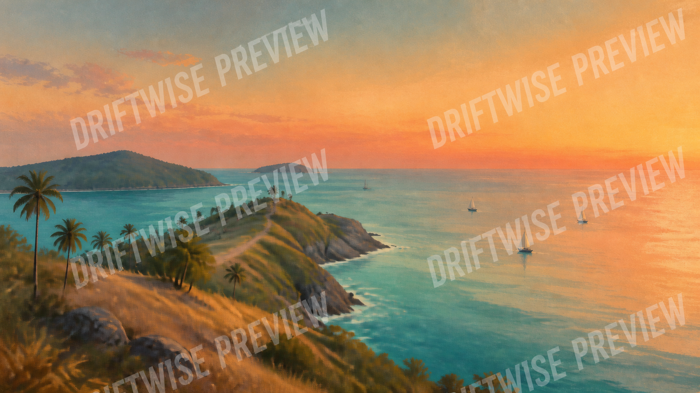
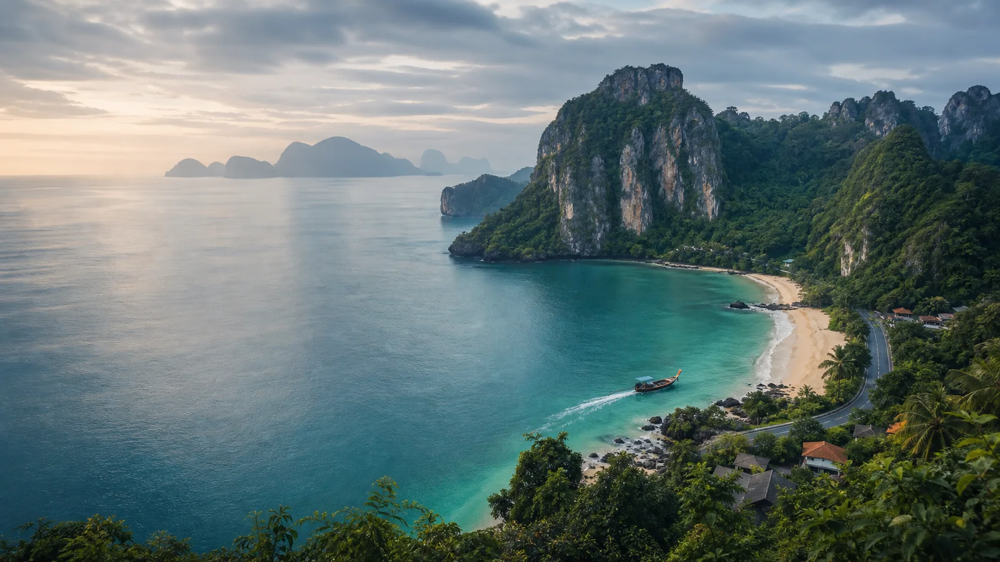
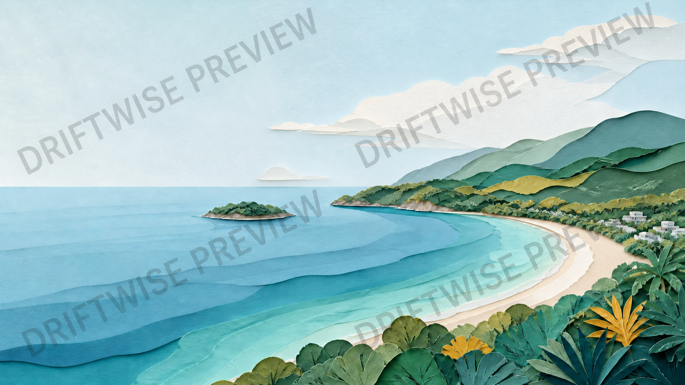
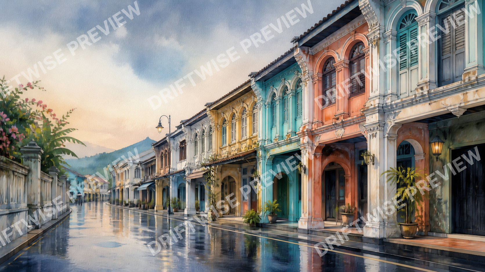
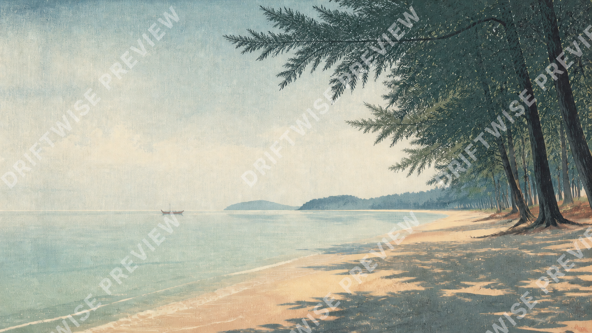
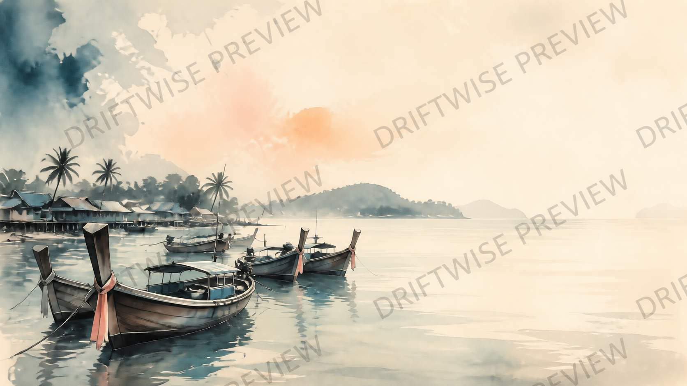
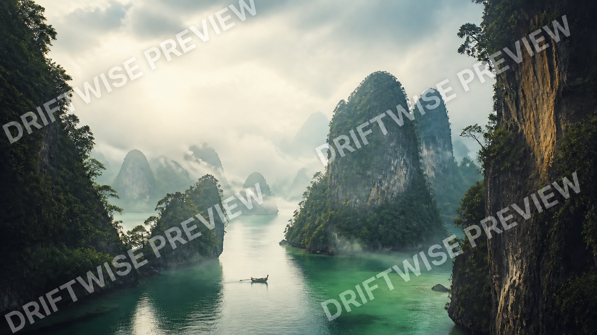

SOUTH CAPE · CINEMATIC GOUACHE
Promthep afterglow
Coral dusk, a sweeping headland and quiet Andaman water. Built for opening slides, travel stories and reflective closing moments.
Buy this backgroundPHUKET · EDITION 016 ORIGINAL AI VISUALS
A small collection of widescreen travel art organised by coast and district. Each composition leaves deliberate room for a title, itinerary, proposal or travel story.

FIRST COLLECTION · PHUKET
These are original AI interpretations inspired by Phuket and a nearby bay excursion. They are creative backgrounds—not documentary images, booking evidence or exact views.
Showing all 6 Phuket visuals

Coral dusk, a sweeping headland and quiet Andaman water. Built for opening slides, travel stories and reflective closing moments.
Buy this background
A tactile crescent bay with generous sky for titles, destination overviews and calm family-trip narratives.
Buy this background
Shophouse colour and blue-hour reflections for culture, food, architecture and slow-city storytelling.
Buy this background
Casuarina shade, pale morning water and uncluttered space for wellness, retreat and quiet-arrival themes.
Buy this background
Working boats and luminous open water for island routes, local texture and understated travel proposals.
Buy this background
Jade water and mist-layered limestone for dramatic chapter breaks, excursion plans and nature-led narratives.
Buy this backgroundA CLEAR CREATIVE LICENCE
Crop, recolour and use a purchased background in presentations, reports, proposals, training and exported client work.
Do not resell, redistribute, share or upload the source PNG to a stock, template or asset library.
Every scene is clearly sold as AI-created artwork. It must not be presented as proof of a hotel, beach condition or exact real-world view.